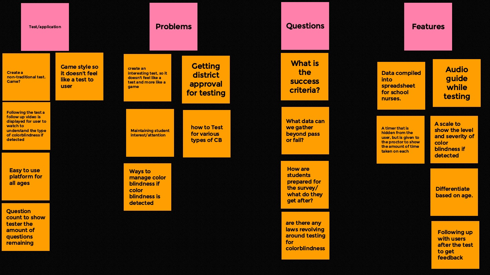

Affinity diagram: Question's & Conserns
"Various problems, questions, features, and testing application to our challenge of testing for color blindness, at a younger age."

Team Personas: Personal Feedback
a>"A driven young art teacher who has realized the problems that sutdents struggle with when dealing with colors"